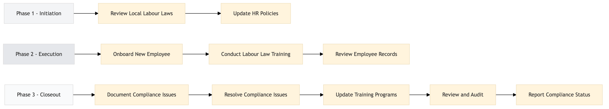

| Role | Steps |
|---|---|
| HR Manager | 1.1 1.2 3.1 3.2 3.4 3.5 |
| HR Coordinator | 2.1 |
| Training Manager | 2.2 3.3 |
| Legal Counsel | 3.2 3.5 |
| Step | Name | Role | System | Input | Output | KPI | Dec? | Exc? | Pain Point / Risk |
|---|---|---|---|---|---|---|---|---|---|
| 1.1 | Review Local Labour Laws | HR Manager | Oracle OPERA Cloud | Local labour law updates | Compliance checklist | Less than 2 hours | N | Y | Keeping up with frequent changes in local labour laws. |
| 1.2 | Update HR Policies | HR Manager | Oracle OPERA Cloud, Workday HCM | Compliance checklist | Updated HR policies document | Less than 4 hours | N | Y | Ensuring all departments are aware of policy changes. |
| 2.1 | Onboard New Employee | HR Coordinator | Oracle OPERA Cloud, Workday HCM | New employee details | Employee profile in HR system | Less than 30 minutes | N | Y | Handling large volumes of new hires simultaneously. |
| 2.2 | Conduct Labour Law Training | Training Manager | Oracle OPERA Cloud, Book4Time | Employee profile in HR system | Training session attendance record | Less than 1 hour per employee | N | Y | Ensuring all employees attend and understand the training. |
| 2.3 | Review Employee Records | HR Manager | Oracle OPERA Cloud, Workday HCM | Employee profile in HR system | Compliance report | Less than 2 hours per employee | N | Y | Maintaining accurate and up-to-date employee records. |
| 3.1 | Document Compliance Issues | HR Manager | Oracle OPERA Cloud, Workday HCM | Compliance report | Compliance issue log | Less than 1 hour per issue | N | Y | Identifying and documenting compliance issues promptly. |
| 3.2 | Resolve Compliance Issues | HR Manager, Legal Counsel | Oracle OPERA Cloud, Workday HCM | Compliance issue log | Resolution report | Less than 1 week per issue | N | Y | Resolving complex compliance issues efficiently. |
| 3.3 | Update Training Programs | Training Manager | Oracle OPERA Cloud, Book4Time | Resolution report | Updated training program | Less than 2 weeks per update | N | Y | Updating training programs to address new compliance requirements. |
| 3.4 | Review and Audit | HR Manager, Internal Auditor | Oracle OPERA Cloud, Workday HCM | Updated training program | Audit report | Less than 1 month per audit | N | Y | Conducting thorough audits to ensure ongoing compliance. |
| 3.5 | Report Compliance Status | HR Manager, Legal Counsel | Oracle OPERA Cloud, Workday HCM | Audit report | Compliance status report | Less than 1 week per report | N | Y | Providing accurate and timely compliance status reports to senior management. |
A structured process document for managing labour law compliance and human resources at a full-service Marriott hotel using Oracle OPERA Cloud PMS.